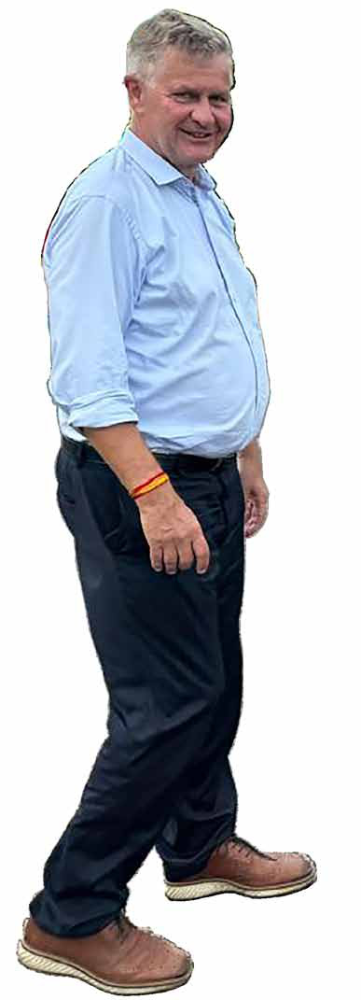
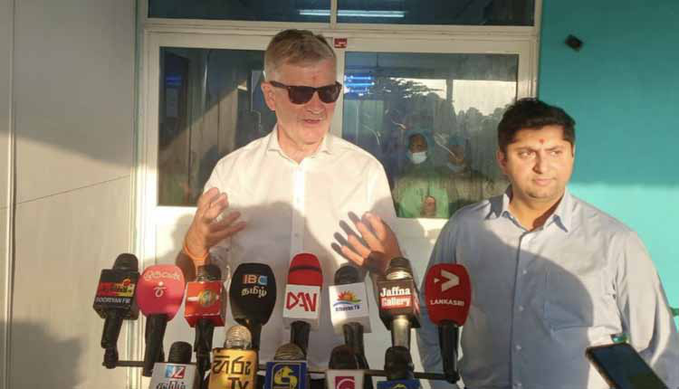
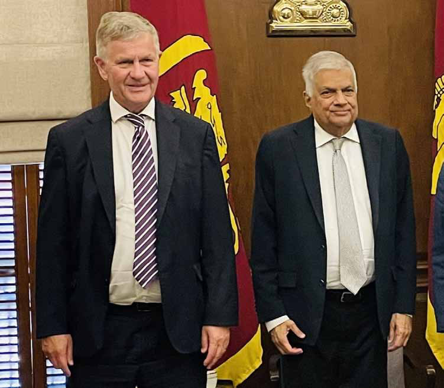
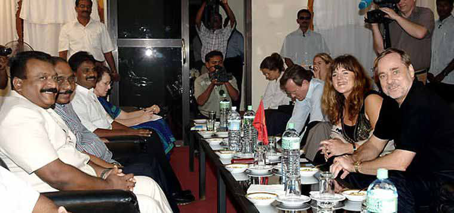
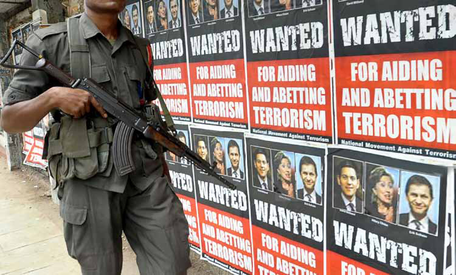
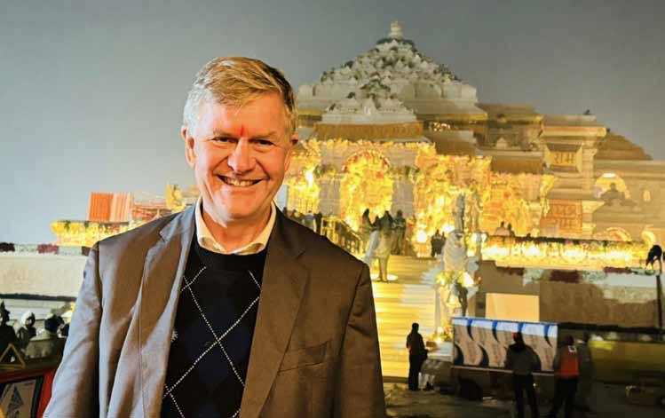
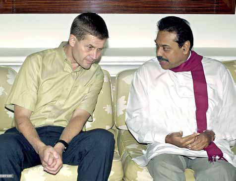
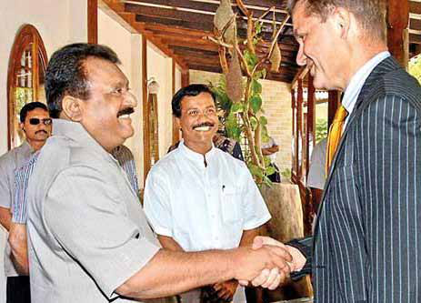

Erik Solheim: 13th Amendment is a Crucial Step Forward for the Tamil Quest in Sri Lanka
Erik Solheim: 13th Amendment is a Crucial Step Forward for the Tamil Quest in Sri Lanka
Jaffna Monitor hellojaffnamonitor@gmail.com 5 I n an exclusive interview with the Jaffna Monitor, Erik Solheim, a key figure in Sri Lanka's peace process and now a climate advisor to the President, delivers an insightful and powerful conversation on the challenges and hopes for the Tamil community and the nation's future. With an unflinching look back at the country's turbulent past and the opportunities Calls for Unity Among Tamils to Support It and Full Government Implementation - An Exclusive Interview with Jaffna Monitor By: our special correspondent Erik Solheim: 13th Amendment is a Crucial Step Forward for the Tamil Quest in Sri Lanka Interview
Jaffna Monitor hellojaffnamonitor@gmail.com 6 that lie ahead, Solheim calls for unity among Tamils, unwavering support for the 13th Amendment, and a collective push toward peace and prosperity. Erik, many recognize your name as soon as it's mentioned in Sri Lanka. Considering your prominent place in the collective memory here, do you see your connection to the country more as an honour, or do you feel it comes with specific responsibilities? How do you view your role in relation to Sri Lanka? I definitely see my connection to Sri Lanka as both an honor and a responsibility. In the past, we dedicated considerable effort to mediate peace between the Sri Lankan government and the LTTE, which was an arduous task. This work allowed me to develop enduring
Jaffna Monitor hellojaffnamonitor@gmail.com 7 relationships with a diverse group of Tamils, Sinhalese, and Muslims throughout the country—relationships that are both deep and personal and that I continue to maintain. Now, I feel a pressing responsibility to assist Sri Lanka in overcoming its economic and environmental challenges. Given that Sri Lanka often lacks sufficient international attention, I am committed to supporting the country and raising global awareness of its needs. You've had a long-standing connection with Sri Lanka, beginning as a peace negotiator and enduring considerable criticism from various factions. Despite these challenges, you returned 16 years later as an advisor to the President. What sparked your initial involvement with Sri Lanka, and what has motivated you to continue your engagement despite the criticisms? My involvement, along with Norway's, in the Sri Lankan peace process began when both the LTTE and the Sri Lankan government recognized the need for a neutral third party to facilitate peace negotiations. Initially, President Chandrika Kumaratunga suggested France as a mediator, but the LTTE opposed this due to her French connections and proficiency in French. The consensus was that a smaller, more distant country would be preferable to avoid the influence of major global powers like the US, China, or Japan. Norway was chosen due to its reputation for neutrality and peace advocacy, making us suitable mediators. Before this role, my primary regional knowledge was of India, with very little direct understanding of Sri Lanka. As an advisor on climate change to President Ranil, you've undoubtedly felt the intense heat currently impacting Sri Lanka. What are your primary goals in this role, and what outcomes are you aiming to achieve with your portfolio? The President recently launched the Tropical Nations Initiative, reflecting his focus on the tropical belt, which is disproportionately affected by climate change. While some northern countries might see benefits from slightly warmer climates in otherwise colder regions, tropical areas face severe challenges like escalated temperatures and more extreme weather events. For instance, tropical regions are prone to cyclones and flooding, similar to the recent events in Pakistan, as well as intense heat waves. This initiative aims to address these issues head-on. The solutions are clear: we need to rapidly transition to renewable energy sources like solar and wind, promote electric vehicles, and enhance forest conservation. These actions are crucial for mitigating the impact of climate change on tropical nations. You've mentioned having a strong working relationship with President Ranil Wickremesinghe and have spoken highly of his leadership. Given this, do you plan to endorse him in the upcoming election? Of course, as a foreigner, I will not endorse any
Jaffna Monitor hellojaffnamonitor@gmail.com 8 Sri Lankan politician. It's appropriate for foreigners to respect and leave such decisions to the people of Sri Lanka. I am well- acquainted with President Ranil Wickremesinghe from the peace process, and I believe he has performed remarkably in stabilizing the economy during a period of severe crisis marked by skyrocketing inflation and long queues for petrol. My aim is to support Sri Lanka, not to meddle in Sri Lanka's domestic politics. I am committed to working with whoever is elected, be it Ranil, Sajith Premadasa, Anura Kumara Dissanayake, or any other leader. If there is a change in presidency, do you expect to continue in your current position? A new administration may ask me and others to continue to support the nation. Indeed, my commitment is to Sri Lanka, not to any individual politician. I am eager to continue helping the country. Given your extensive experience in environmental matters, how do you believe you can influence Sri Lanka's approach to environmental issues? I hope to offer advice and share valuable knowledge from other parts of the world, particularly from India and China, two nations with which I frequently work. Both are rapidly advancing, especially in environmental technology. My goal is to help Sri Lanka view environmental and climate challenges as opportunities to create jobs and drive prosperity through green initiatives. Embracing green technologies can lead to significant job creation. For instance, China has been so successful in this regard that 60% of all green technologies in the world are now developed in China alone. It's far ahead of the West. When you purchase a Tesla electric car, the battery is likely made in China, which is half the car's value. In India, Prime Minister Modi is swiftly advancing renewable energy projects, including green hydrogen. Plans are underway to introduce electric buses and cars, and investments in solar

Jaffna Monitor hellojaffnamonitor@gmail.com 9 energy, including floating solar parks, are occurring daily. Sri Lanka should also seek investment from and partnerships with the US and Europe. However, the most significant opportunities might come from India and China due to their competitive pricing. I am eager to facilitate this exchange of expertise and potentially help establish connections with companies interested in investing in Sri Lanka. Are you suggesting that the Sri Lankan government should view environmental challenges as opportunities rather than problems? Exactly. It's about integrating economic development with ecological protection. The old mindset that pits development against the environment is outdated. Today, the question is: How can we go green in a way that both creates jobs and ensures prosperity? This approach redefines progress, marrying economic growth with environmental sustainability. What do you consider to be the most pressing environmental issues locally and globally at the moment? Let's start with the local issues. I recently met with all the district commissioners from the Eastern Province, where we identified four major environmental opportunities. First, we're looking to expand solar energy through rooftop installations and larger solar plants. Second, there's a focus on protecting mangroves and forests, with efforts to secure international financial support for these habitats. Third, we aim to transform agriculture gradually into more sustainable practices, utilizing agricultural residues for biofuels rather than making abrupt changes like those attempted under Gotabaya Rajapaksa. Lastly, we are improving waste management to keep the Eastern Province cleaner, which will not only attract more tourists but also enhance the quality of life and health of local residents. Eric Solheim addresses the press in the Northern Province

Jaffna Monitor hellojaffnamonitor@gmail.com 10 Despite the unfavourable outcomes, do you believe that Gotabaya Rajapaksa's intentions were good when he implemented the ban on chemical fertilizers and aimed for a 100% green agricultural policy using organic fertilizers? Yes, I believe his intentions were good. He aimed to transform the environment and address Sri Lanka's debt issues. However, his methods were questionable, to say the least. You can't simply go to a farmer and say, 'Yesterday, you used chemical fertilizers, but starting today, you will adopt a different method.' That approach simply won't work. Transitioning to organic fertilizers is a long- term process; it cannot be implemented in a single day. It should begin with one farmer who learns the new methods; from there, it should spread to others through mutual learning. That's how it should proceed. How would you assess Gotabaya Rajapaksa's performance as President? Eric Solheim with President Ranil Wickremesinghe during his latest visit to Sri Lanka

Jaffna Monitor hellojaffnamonitor@gmail.com 11 There can hardly be any doubt that his time as President was a failure. There was a massive movement against him from all sectors, religious groups, and ethnic communities across Sri Lanka. Tamils, Sinhalese, Muslims, the rich and poor, students and academics, workers and proprietors—everyone demanded his resignation. This was primarily due to his failed economic strategy. For instance, you cannot reduce taxes and simultaneously increase government spending—it simply doesn't add up. However, he was also unlucky, as he became President during the COVID-19 pandemic. Do you believe there were any foreign influences involved in the 2022 Sri Lankan protests, commonly referred to as Aragalaya? No, that's a common but incorrect belief in Sri Lanka—that there is always someone or something behind everything. In my view, all the major powers—India, China, the United States, and Europe—share the same goal: a prosperous, rapidly developing Sri Lanka that is friendly to everyone. Of course, each nation, whether it's India or China, would prefer to have closer ties with Sri Lanka. However, overall, Sri Lanka can maintain friendly relations with everyone while still protecting its own interests. But I am certain there were no foreign hands behind the Aragalaya movement. It was a spontaneous movement by the people, driven by desperation due to the economic situation. Who do you hold responsible for the breakdown of the ceasefire that you were actively negotiating? I blame Prabhakaran for the end of the ceasefire. He ultimately chose to return to war, unable to commit to a federal settlement. Although he initially accepted the 'Oslo Declaration in 2002, which advocated federalism, he failed to uphold this commitment. Additionally, I hold the Sri Lankan state responsible, particularly due to the division between the SLFP and the UNP, the two major political parties at the time, which failed to unite for the greater purpose of Sri Lanka, above petty party politics. Norway's Peace Delegation Meets LTTE Leader Prabhakaran and Top Tier Leaders

Jaffna Monitor hellojaffnamonitor@gmail.com 12 What percentage of the blame do you assign to the LTTE and the Sri Lankan government for the breakdown of the ceasefire? I prefer not to engage in this kind of judgment, even though I understand the question. It's difficult to assess all the factors from the past accurately. But Eric, you were directly involved in those negotiations, right? Yes, I was the main negotiator, but it's important to consider the broader context. The book 'To End a Civil War: Norway's Peace Engagement in Sri Lanka' by Mark Salter resonates with my views. I understand the immense suffering experienced by many, especially the Tamil community, but also the Sinhalese who lost loved ones. There's a strong desire for clarity among those affected—they want to understand what happened, to confirm facts that allow them to honor their loved ones appropriately and move forward. For instance, a widow or someone who lost a spouse under unclear circumstances finds it very difficult to move on without that closure. Therefore, we should focus on shedding light on what happened rather than passing judgment on every act of the past. You've faced significant criticism from various factions over time. Sinhala nationalist parties have accused you of sympathizing with the LTTE, while some staunch LTTE supporters blame you for the group's failures On April 29, 2009, in Colombo, a Sri Lankan army trooper passes by posters accusing British Foreign Minister David Miliband, US Secretary of State Hillary Clinton, and Norwegian International Development Minister Erik Solheim of supporting terrorism in Sri Lanka. The country continued to resist global demands for a ceasefire, aimed at allowing civilians to escape from the conflict zone to safety.

Jaffna Monitor
hellojaffnamonitor@gmail.com
13
even after the war's conclusion. How
do you respond to these accusations,
especially given that you initially
engaged in the peace process with
positive intentions?
I think it's quite normal. When you attempt
to make peace, criticism is inevitable. This is
true for peacemakers in every conflict. I was
also involved in Nepal, Sudan, and Myanmar.
Critics often target those striving for peace
because peace requires compromise. If you
aim for a 100% win, peace is unattainable; only
a military victory is possible, and people are
generally unhappy with compromises. Thus,
criticism follows.
Indeed, during the war, we were mainly
criticized by Sinhala hardliners who accused
us of being too lenient with Prabhakaran and
overly supportive of the LTTE. Whenever
the LTTE appeared on TV, I was often seen
alongside Prabhakaran or Anton Balasingham.
After the war, some Tamil extremists have
similarly claimed that I was responsible for the
death of Prabhakaran.
I've been very happy since returning. Now,
aside from a few extremists, the vast majority
of Sri Lankans, both Tamil and Sinhalese, have
welcomed me with open arms.
You are one of the very few people
who have met Prabhakaran frequently.
Indeed, I believe I am the foreigner who met
him most frequently.
How do you perceive him as a person,
a military commander, and a leader?
As a military commander, he was enormously
successful for a very long time, building
this strong political movement and massive
military machinery. He entered the peace
process at the peak of his power, signing for
peace while still very influential. However,
in the last three years of the war, I can
see only mistakes from Prabhakaran. He
believed he could fight the Sri Lankan army
as a conventional force. He was pushed from
one defensive position to another, never
reaching out for any compromise, settlement,
or solution, and taking thousands of Tamils
with him into peril. Toward the end of the
war, we offered Prabhakaran the opportunity
for all the Tamils and the Tiger cadres to be
evacuated from the Mullaitivu region, where
tens of thousands of Tamils were trapped.
We proposed that all LTTE cadres and Tamil
civilians be taken out of the war zone by ship.
To where...?
To the rest of Sri Lanka, including Colombo,
or possibly to other countries where they
might receive political asylum. Our proposed
plan included registering every LTTE cadre
and civilian. This would make it much more
difficult to harm or kill them, as international
entities would be involved in the registration
process. Initially, Prabhakaran said that he
would accept this offer, but ultimately, he
refused
When this happened.. which month...?
It was April 2009. We tried to ensure a
process to make sure that their lives were all
saved through the registration process and
evacuation by ship from the east coast. The
UN Secretary-General at the time, Ban Ki-
moon, was ready to support it, even to visit the
LTTE. I was, of course, ready to go to agree
Jaffna Monitor hellojaffnamonitor@gmail.com 14 with Prabhakaran. We had backing from India and the United States. There was international support to save the lives of all the Tamil civilians and LTTE cadres, but Prabhakaran sadly at the end refused. So what was Prabhakaran's plan? I cannot judge his plan. I don't think I would speculate on that. When did you realize that the LTTE might be defeated? India, with its extensive intelligence capabilities in Sri Lanka, consistently advocated for a negotiated peace, maintaining that a military victory was impossible. However, from 2008 onwards, their stance began to shift. Top Indian national security officials indicated that the Sri Lankan army had made significant progress on the ground. The capture of Kilinochchi by government forces was a very strong sign that a military victory, previously deemed unattainable, might now be within reach. Indian intelligence, which had numerous methods for monitoring the situation, informed us that the Sri Lankan government might indeed achieve a military victory. Do you believe that both parties, the LTTE and the military, committed war crimes? Yes, it is absolutely clear that there were war crimes committed by both sides. However, I will refrain from judging individuals or specific incidents. But there's no doubt in my mind about the occurrence of these crimes. Erik, do you view the LTTE predominantly as freedom fighters or as a terrorist organization? I'm

Jaffna Monitor hellojaffnamonitor@gmail.com 15 asking for your personal view now, not your stance during the negotiations. I really don't want to delve into judgments, but it must be noted that, at the time, there was no doubt that the LTTE received substantial support from the Tamil community in Sri Lanka. Sometimes, this support might have been coerced, due to strong-arm tactics and behavior. However, it is also undeniable that the vast majority of Tamils, both in the diaspora and within Sri Lanka, supported the LTTE at that time. Do you believe that the LTTE was genuinely committed to peace when they entered into negotiations? The LTTE initiated the peace process at the peak of its power, not when they were weak, as some claim. In fact, the LTTE was never as strong as it was in 2001, which is exactly when the peace process began. I see this as a clear signal that, at that time, they were interested in exploring peaceful means to resolve the conflict. Why else would you start a peace process when you are at your strongest? You mentioned in an interview that if Prabhakaran had listened to Anton Balasingam, the situation for Sri Lankan Tamils might have been better. Can you elaborate on that? Absolutely. Bala, as we all called him, advised against several poor decisions made by the LTTE leadership. Did he mention any specific mistakes made by the LTTE leadership to you? Absolutely.


Jaffna Monitor
hellojaffnamonitor@gmail.com
16
What mistakes did he mention?
For instance, he mentioned that the killing
of Rajiv Gandhi was a huge mistake. He
also pointed out that the LTTE weakened
significantly after the split with Karuna and
the eastern fighters and was very worried
about the effect of the split on the LTTE. Bala
resolutely accepted federalism.
You are a close friend of President
Ranil Wickremesinghe. Do you believe
that he will grant some form of power
to the Tamils?
I absolutely believe that Ranil's intention is to
find a solution based on the 13th Amendment.
This Amendment supports the devolution of
power to the Tamils. However, this process is
not straightforward. The struggle of the Tamils
did not end with the LTTE. It will continue in
civilian, non-violent forms and address issues
such as land disputes and temple controversies.
The Tamil community of course must stand up
and speak out. It should unite in support of the
13th Amendment. You don't get anything for
free; you must defend your rights.
Though the LTTE was militarily
defeated, the underlying reasons why
the Tamils began their struggle remain
unchanged—the same problems still
exist. As a friend and advisor to Sri
Lanka, what advice would you give to
the Sri Lankan government?
Now, I firmly believe that the 13th
Amendment is a crucial step forward for the
Tamil quest in Sri Lanka. It is essential for
Tamils to unite and support this Amendment
and for the Sri Lankan government to fully
implement it. Additionally, all communities
should contribute to the country's economic
growth. I recall that back in the 1950s, Jaffna
was the most developed region in Sri Lanka.
However, many Tamils have since left the
north and east. The diaspora Tamils, who
have achieved immense success abroad,
should also support Sri Lanka's economic
development. This collective effort will benefit
all communities.
As you mentioned, the diaspora is a
significant force. What advice would
you give to them?
The most important advice for the diaspora
is to invest more in Sri Lanka. Many of them
are very affluent. I often invite some of my
Tamil friends to my tiny apartment in Norway,
and they ask me, 'How can you live here? Our
houses are much bigger.' They are that affluent.
I encourage them to use their expertise to
set up companies, invest in business in the
homeland, and establish small hotels. This
would be a significant help.
The Sri Lankan government should also play
a major role in making this process easier. The
diaspora Tamils must also understand that
the leadership for Sri Lankan Tamils is based
here, not abroad. Sometimes, you may hear
diaspora people calling for violent attacks or
similar actions, but they are not the ones who
will suffer. They would sit safely abroad while
the suffering remains with the people who live
here in Sri Lanka. They must leave the main
decisions to the Tamils on the ground.